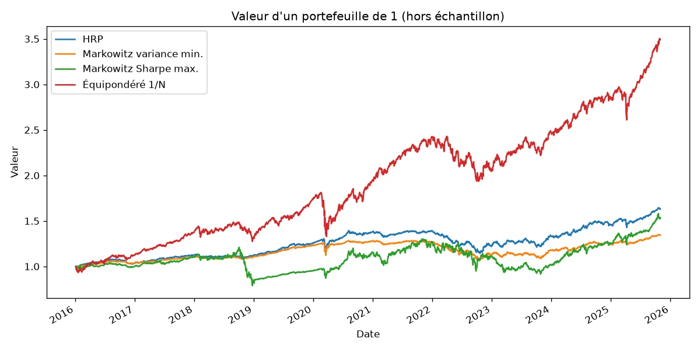

Projet personnel · Python · sept.–nov. 2025, backtest ajouté en novembre 2026
Hierarchical Risk Parity vs Markowitz
Un framework d'allocation d'actifs par clustering hiérarchique, avec une implémentation de HRP et un backtest hors échantillon face à Markowitz.
Le problème
L'optimisation de Markowitz inverse la matrice de covariance des rendements. Estimée sur des données bruitées, cette matrice est mal conditionnée : de petites erreurs d'estimation produisent des poids instables, souvent concentrés sur quelques actifs. Hierarchical Risk Parity (López de Prado, 2016) évite cette inversion en s'appuyant sur la structure hiérarchique des corrélations.
Méthode
- Distance de corrélation entre actifs, puis clustering hiérarchique (single linkage).
dij = √((1 − ρij) / 2)
- Quasi-diagonalisation : les actifs sont réordonnés selon les feuilles du dendrogramme, ce qui regroupe les actifs corrélés le long de la diagonale de la covariance.
- Bissection récursive : à chaque coupure, le budget est réparti entre les deux sous-groupes en proportion inverse de leur variance.
α = 1 − σ²gauche / (σ²gauche + σ²droite)
- Références Markowitz (long-only, somme des poids = 1, SLSQP) : variance minimale et Sharpe maximal ; plus l'équipondéré 1/N.
- Backtest walk-forward : à chaque rebalancement, les poids sont estimés uniquement sur les 252 jours de bourse précédents, puis conservés 21 jours. Aucune donnée future n'est utilisée (vérifié par un test), pas de frais, taux sans risque nul. Prix ajustés Yahoo Finance.
Résultats
12 actifs (actions, obligations, or, pétrole, immobilier, marchés internationaux et émergents), backtest du 5 janvier 2016 au 31 octobre 2025.
| Stratégie | Rendement annualisé | Volatilité | Sharpe | Drawdown max |
|---|---|---|---|---|
| HRP | 5,10 % | 6,32 % | 0,82 | −17,9 % |
| Markowitz variance min. | 3,05 % | 5,18 % | 0,61 | −16,5 % |
| Markowitz Sharpe max. | 4,48 % | 14,09 % | 0,38 | −34,8 % |
| Équipondéré 1/N | 13,60 % | 13,24 % | 1,03 | −26,7 % |

- Face à Markowitz, HRP gagne +2,05 points de rendement annualisé contre la variance minimale et +0,63 point contre le Sharpe maximal, avec le meilleur Sharpe des trois et un drawdown deux fois plus faible que le Sharpe maximal.
- Le simple 1/N fait mieux que les trois sur cette période. HRP et la variance minimale, qui réduisent le risque, placent en moyenne 62 % et 87 % du portefeuille sur l'ETF obligataire AGG, peu rémunérateur sur la période, alors que le 1/N garde 25 % en actions technologiques.
- Le classement dépend de l'univers : sur un portefeuille de 8 valeurs technologiques, Markowitz Sharpe maximal dépasse HRP (48,5 % contre 31,2 % par an).
Ce que j'en retire
Un protocole propre (estimation glissante, pas de biais d'anticipation, tests unitaires) compte plus que le chiffre final. HRP tient sa promesse de stabilité face à Markowitz, mais une allocation naïve peut gagner sur une période donnée, et le résultat change avec l'univers d'actifs.
Limites et pistes
- Pas de frais de transaction ni de contrainte de rotation : le Sharpe maximal, qui change souvent de poids, serait davantage pénalisé.
- Une seule fenêtre d'estimation (252 jours) et une seule fréquence de rebalancement : une étude de sensibilité serait utile.
- Covariance empirique : un estimateur à rétrécissement (Ledoit-Wolf) améliorerait probablement Markowitz.